|
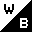 basn0g01 - black & white 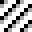 basn0g02 - 2 bit (4 level) grayscale 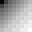 basn0g04 - 4 bit (16 level) grayscale  basn0g08 - 8 bit (256 level) grayscale basn0g08 - 8 bit (256 level) grayscale
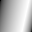 basn0g16 - 16 bit (64k level) grayscale 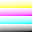 basn2c08 - 3x8 bits rgb color 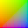 basn2c16 - 3x16 bits rgb color 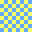 basn3p01 - 1 bit (2 color) paletted 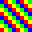 basn3p02 - 2 bit (4 color) paletted  basn3p04 - 4 bit (16 color) paletted basn3p04 - 4 bit (16 color) paletted
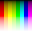 basn3p08 - 8 bit (256 color) paletted  basn4a08 - 8 bit grayscale + 8 bit alpha-channel basn4a08 - 8 bit grayscale + 8 bit alpha-channel
basn4a16 - 16 bit grayscale + 16 bit alpha-channel 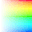 basn6a08 - 3x8 bits rgb color + 8 bit alpha-channel 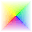 basn6a16 - 3x16 bits rgb color + 16 bit alpha-channel |
|
|
 Willem van Schaik, Singapore, March 1998
http://www.schaik.com/wwwillem.html
Willem van Schaik, Singapore, March 1998
http://www.schaik.com/wwwillem.html